Week 8: Embedded Programming w/ Arduino
Embedded Programming is the routine of installing hardware to run various pre-programmed functions that contribute to the completion and functionality of a product. This can be done on a number of hardware, but there are generally a few things to consider, that being:
- Electrical Components
- Current, Voltage, and Resistance
Electrical Components
Electrical Components, alternatively referred to as Electronic Components are devices that use electricity. These can include and are not limited to:- Wires, used to connect components.
- Switches, which open and close a circuit, which essentially turns it on and off.
- Resistors, components that provide resistance to the flow of electricity.
- Capacitors are used to store charge, block DC or allow AC
- Inductors, coils that resist change in current.
- Inductors, that allow or block current.
- Diodes, which allow or block current.
- Transistors, which amplify signals.
- Integrated Circuits which are miniaturized combination of the above items.
Current, Voltage and Resistance
Electricity is the flow of electricity in a closed circuit. Current, Voltage and Resistance are measurements of various parts of a circuit's calculations.- Current, which is the rate at which electrical charge flows through a certain point. It is measured in Amperes.
- Voltage refers to the difference in electrical potential between two points. It is measured in Volts.
- Resistance is the measurement of the opposition to current flow in an electrical circuit. It is measured in Ohms.
- Ohms Law: Voltage = Current * Resistance ( V = IR )
- Power Power = Voltage * Current
Programming
Embedded Programming is derived from the desire to reduce the number of devices in the circuit and the sizes. Originally, a dedicated computer system with dedicated functions were needed to perform specific tasks, but due to this goal of reducing the size, through the development of the Uno, the circuit was reduced to a single Intergrated Circuit with support devices. This IC and its programming is collectively known as Arduino. An Arduino system comprises of:
This IC and its programming is collectively known as Arduino. An Arduino system comprises of:- Software & Software Tools
- Integrated Development System (IDE)
- Arduino programming language (C++ like) based on Wiring
- Development & Debugging tool based on Processing
- Software libraries ( open source contributions )
- Hardware
- Atmel processor board
- Shields (Add-on modules)
- Sensors, actuators, peripherals
- Open Source Platform
- "The board is made up of a microprocessor board." This is inaccurate, as what this statement refers to is the Arduino Uno board, not Arduino itself.
- "The board can be used to build projects." This is inaccurate as the board is simply used as a control unit to activate or manipulate additional modules to accomplish their intended goal or function in a circuit through the use of code.
- "Programmed in C++" Arduino uses a proramming language that derives from C++, and is not C++ itself.
- "Has a lot of clones, which may be incompatible" The various Arduino clones, while not being made by the same supplier, can still accomplish and serve the same functions as the genuine board.
- Arduino is inexpensive, with the board costing lesser than $5, which is much lesser than what the specialised systems built to perform specific functions can cost.
- Cross-platform capabilities, allowing people to use Mac, Linux, and Windows. This means that it is widely accessible by many people with different operating systems.
- Simple programming environments using a user friendly GUI.
- Open source software and hardware that is extensible.
- Most common microcontroller board used to begin Arduino projects.
- Uses an Atmel Atmega328P processor with a seperate programmable interface using another Atmel Processor and USB.
- Has sockets for interfacing and power
After you choose your board, you will then need to learn how to program with the Arduino IDE. In the case of the Uno,
- it uses a bootloader (2K code), allowing programming through a USB interface on the board. The board runs code the order of:
- Processor starts up
- Loads and runs bootloader
- Loads program you are sending via USB if there is a programming command from the serial interface.
- Otherwise, it will run the last loaded program
- With this in mind, it is understandable why through the use of the Bootloader and USB interface, it is so much easier do to work or test programs on Arduino systems.
- Write your code. 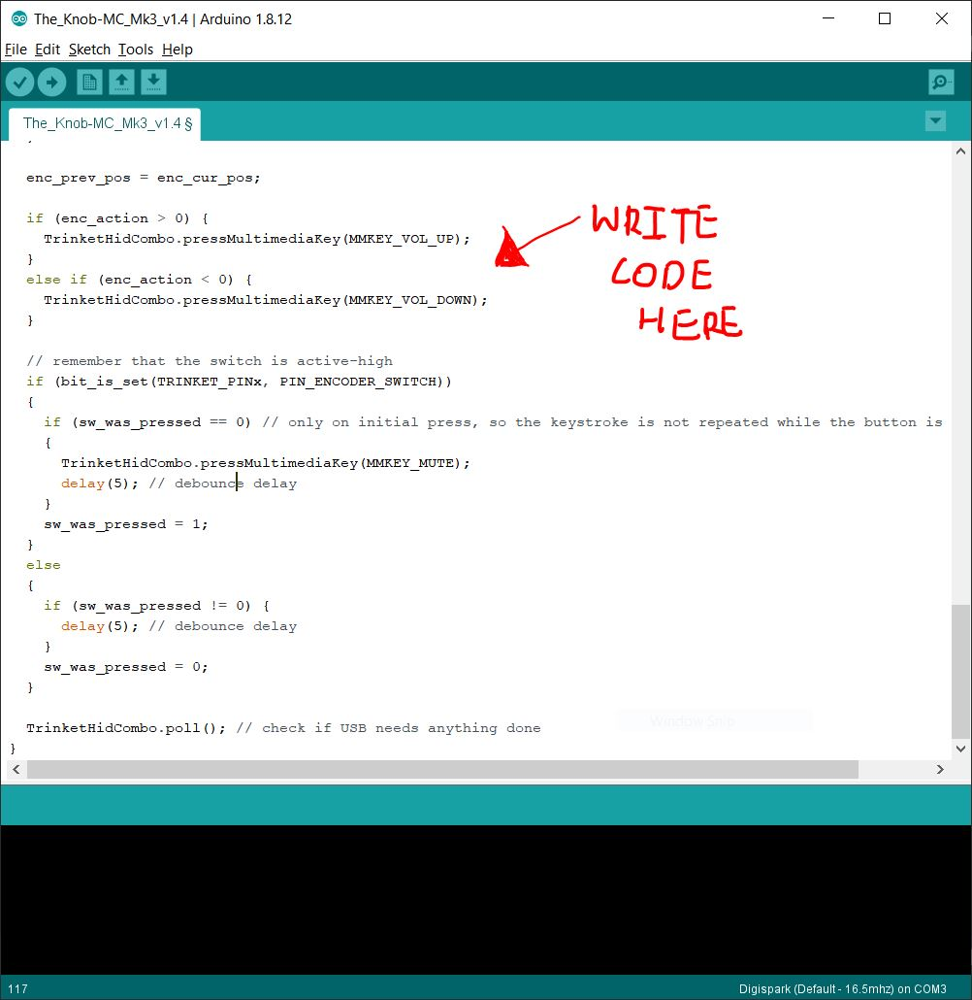
- Compile/Verify your code. 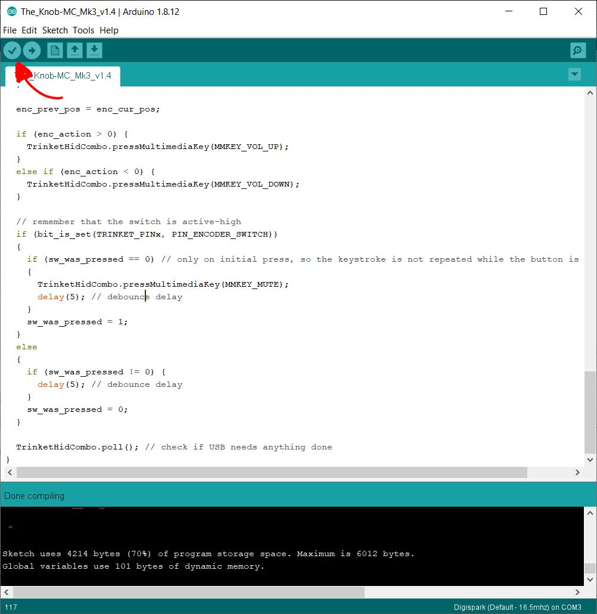
- Upload your code to UNO board.
- Press Reset Button, which rather than resetting all data on the board, actually runs the board starting from the first line of code.

- Observe Results and make changes if and where needed.
- Firstly, you need to connect your UNO board to the computer running the Arduino IDE. 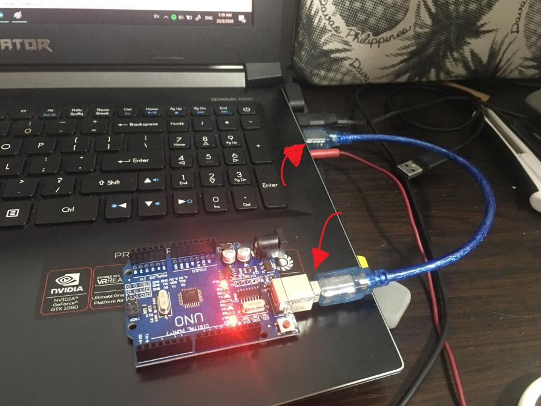
- Launch the Arduino IDE.
- Setup the IDE.
- Select the correct board that you are using, but in this case, the board should be the Arduino UNO. 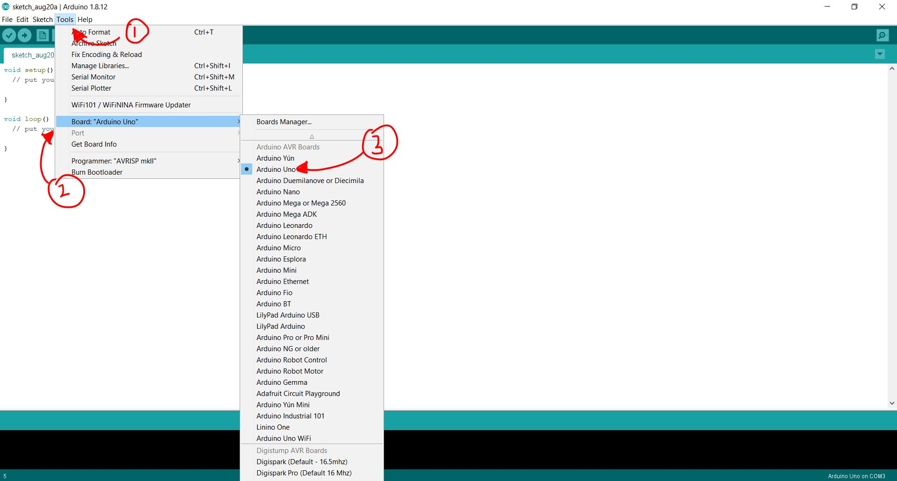
- Identify and check the port the board is connected to. 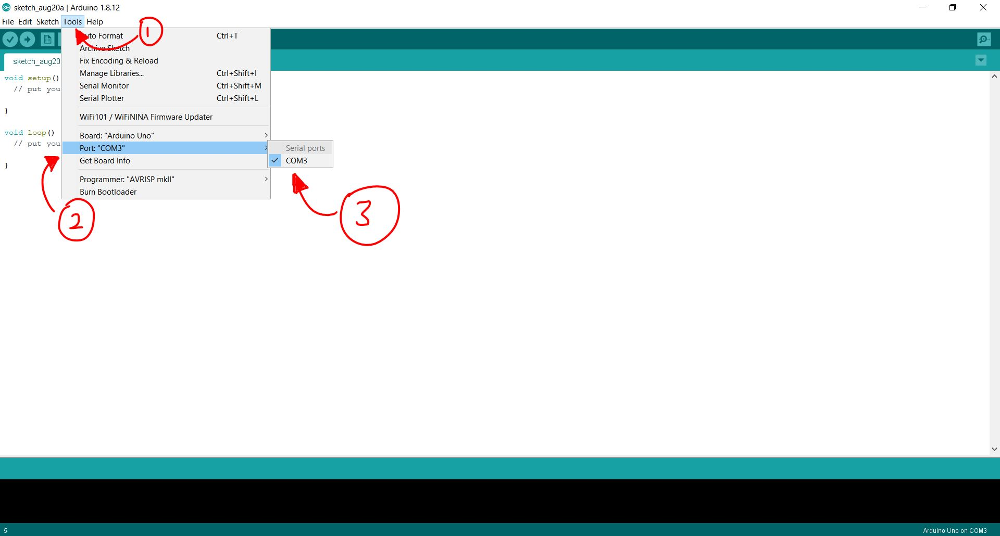
- In the programming language, words with () behind them are called Functions. They carry out specific processes at specific times, with Setup() only being called and executed at the start of the script only once in its entire run time.
- Setup() usually contains code that serves to inisitialise, or as the name implies, setup various settings or adjustments for the project and subsequent functions to function properly.
- Contains variables to be initialised, and any I/O pins used.
- Code in this section is run repeatedly, more specifically in an indefinite loop after Setup().
- This can be used to trigger other functions upon certain conditions being met, or be used to count or continually change something such as a time based variable.
- Comment any and all code written to remind yourself of what it does. If not for each, line, then at the very least each section that carry out their own tasks.
- Use uppercases to denote constants
- Add indents to your code
- The ATMega328 has 14 digital input/output ports.
- Digital Values (1 = 5V, 0 = 0V)
- Some of these ports are multifunctional, but it depends on how they are initialised.
- They can perform as Digital Inputs, which is the default,
- Digital Outputs,
- or Pulse width modulation outputs.
- Arduino provides useful library functions for these purposes, simplifying programming.
Electronic Protoyping
Electronic Prototyping involves using knowledge of electrical components and electricity to create a prototype, serving as an early sample or mockup of the project. This allows for testing and odifications to the design as the user sees fit, and can be done with three techniques.Breadboarding
Breadboarding is a a technique that makes use of a breadboard, a construction base for prototyping electronics. Breadboarding 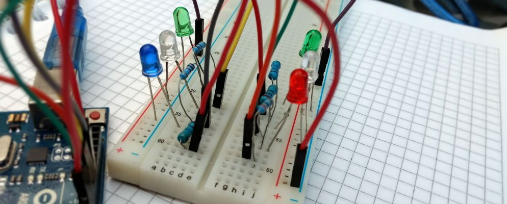 Advantages:- Does not require soldering
- Allows testing
- Allows modification
- Gets complex very easily with more connections
- Loose connections
- May be inaccurate
 Power Rails Connector
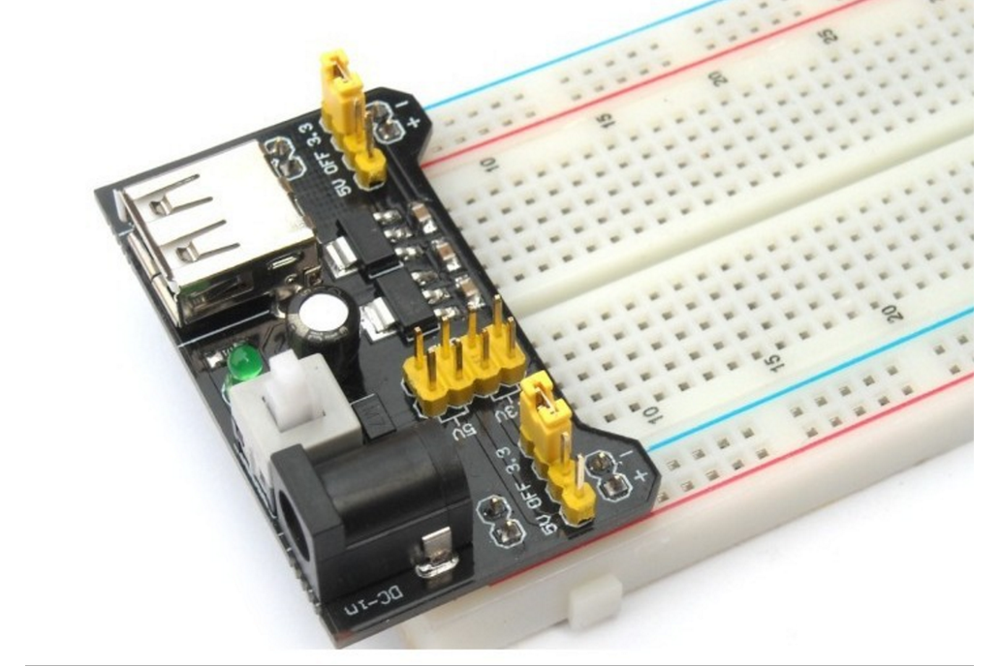
Dupont Male-Male Jumper Wires
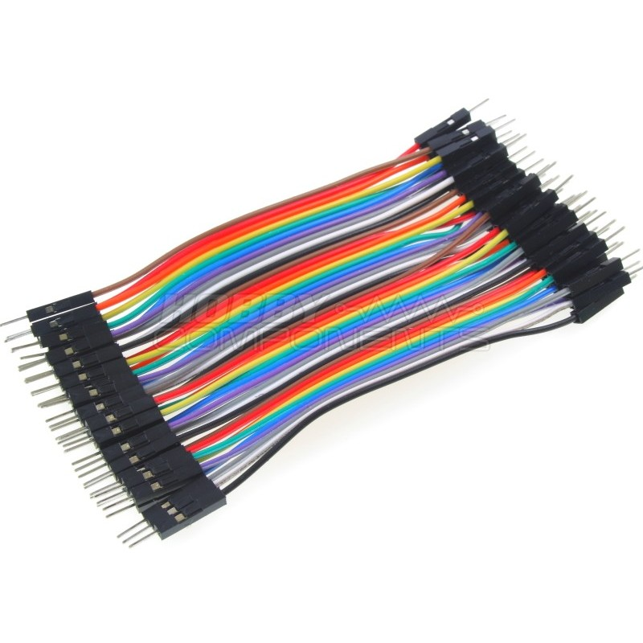
Power Rails Connector
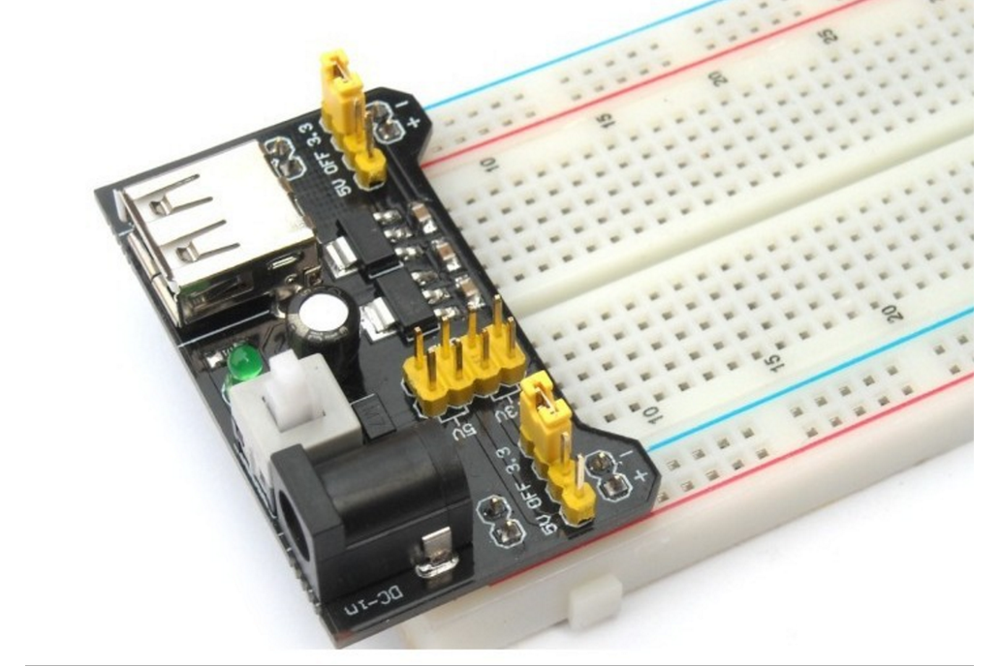
Dupont Male-Male Jumper Wires
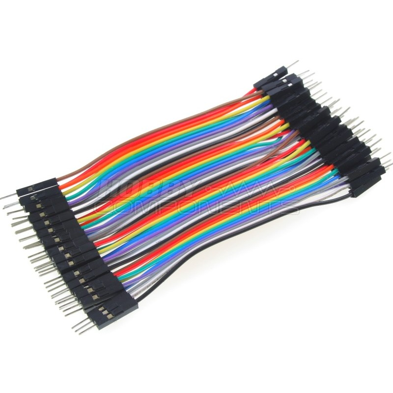
Stripboarding
Stripboardng involves the use of an electronics protoyping board which provides a grid for placement and connectivity of components. Stripboarding 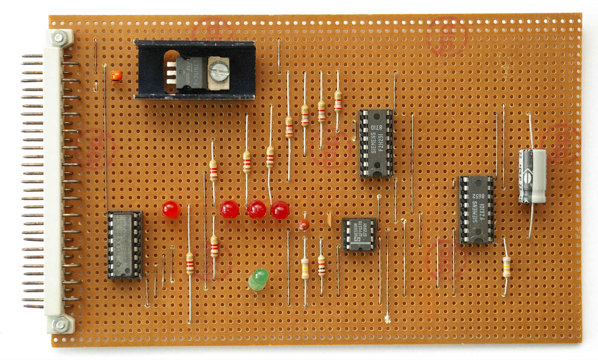 Advantages:- Can handle simple to relatively complex ciruits
- Can handle a variety of components
- Secure connections
- Requires soldering
- Planning needed for complex circuits
- Medium complexity
Printed Circuit Boards
Printed Circuit Boards are boards that connect electronic components using copper tracks, with the components being soldered onto the PCB. These PCBs can be single, double, or multi-layered, with each "layer" referring to the conductive copper substrate layer(s) used on the board. These boards are made through two processes, chemical etching and mechanically engraved boards. Generally, Mechanically engraved boards are recommended for prototyping over chemical etched boards due to the toxicity of the latter's manufacturing process.Exercise: Wire and interface one input device and output device to read inputs from the input device to trigger the output device. With this exercise in mind, I decided to use a micro servo motor as my output device, and two push buttons as my input. The goal would be to make a servo that constantly turned, and using the buttons, someone would be able to control the speed of the buttons. So, I started off by declaring variables to be used in the code, then putting in the setup code, and finally the loop code. 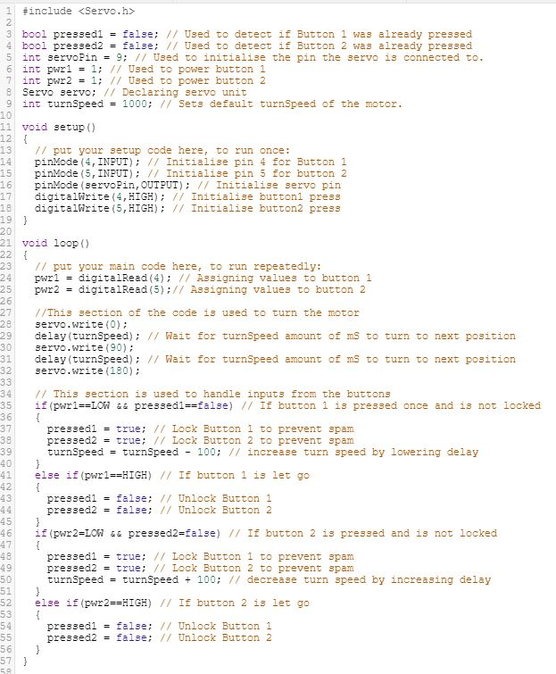 However, an error with the code popped up, saying that I was not allowed to lock buttons using boolean variables in the loop function. Hence, my fix to the solution was to create a function to unlock the buttons when both buttons were not pressed. And just when I thought I'd fixed the problem, I realised that there was a problem with the timing, and hence, due to not wanting to spend any more time on the exercise, changed it to a servo that turns 10 degrees in any direction when the corresponding button is pressed, resulting in this Next, I had to wire up a model to test if it would work, and hence, I used TinkerCAD, a website for making simulations of projects and found a similar circuit as reference. It can be found by clicking here. The simulation I made can be found here: Simulation Now that the simulation was wired up, I needed to make the physical version by wiring components on a breadboard, and it looks like this:
{kind=link}
 Shown below is a video of the result.
Shown below is a video of the result.